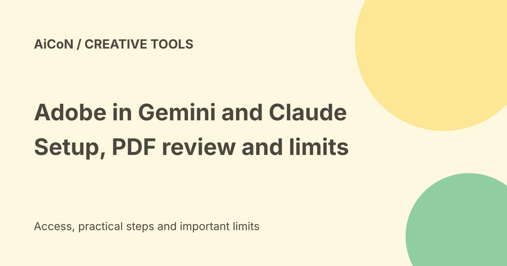

Adobe in Gemini and Claude: setup, creative tools and PDF limits
Adobe announced its Gemini connection and an expanded Claude plugin on 24 September 2026. The Gemini rollout covers all Gemini plans, according to Adobe, while the Claude plugin adds Acrobat and hands-on editing. That does not make every Adobe product, premium feature or unlimited operation free. Setup, compatibility and account limits still apply.

What arrives in Gemini?
Adobe lists Photoshop, Lightroom, Express and Firefly tools for tasks such as photo enhancement, product images, marketing assets and custom designs inside a Gemini conversation.
The connector chooses tools to work toward the requested result. It is not the same as having every feature of each full desktop application available in chat.
Examples of suitable requests
The announcement describes improving lighting and crop across product photos, adapting a design to social formats and customising Express templates.
Give clear output requirements and review the result. A request to preserve a brand does not prove that the finished colours, wording, logo placement and dimensions are correct.
Official Gemini setup
- Open your Gemini settings.
- Find Personal Intelligence and connected apps.
- Select Adobe if it is available in your account.
- Read the connection and data-access prompts.
- Sign in with your Adobe account, or create one if needed.
- Try a non-sensitive image or design.
- Review the exported result before using it.
This follows Adobe's published route. The exact interface may vary with the account and rollout. No account was connected for this guide.
All Gemini plans does not mean unlimited Adobe
Adobe says the connection is rolling out globally and is available across all Gemini plans. It also says setup is required and compatibility and availability vary.
A free Adobe account can be created, but that is not a blanket licence to premium products, stock content or unlimited generations. Read the actual usage and entitlement prompts in your account.
What changes in Claude?
The Adobe for Claude plugin adds Acrobat to its existing creative tools. Adobe describes more than eighty tools across several Adobe products, with new interactive editors for PDFs and Express designs.
The announcement includes organising pages, combining or splitting documents, redaction, conversion, text edits, comments and document review. Check which operations are available in your actual session.
Guest versus signed-in Claude access
Adobe says readers can begin as a guest or sign in to unlock the full plugin experience, including higher usage limits, more tools and continuity across sessions.
Those differences matter. Guest access is not unlimited signed-in access. The checked announcement does not provide a final INR tariff or every account's numeric allowance.
Existing connector users
Adobe says its previous Claude connector automatically updates to the new plugin. The rollout covers Claude and Claude Code on desktop, mobile and web.
Confirm that the plugin actually appears before promising a workflow to a client. A rollout announcement does not prove every account has already updated.
Check PDFs carefully
Page order, deleted pages, redacted content and conversions can change a document's meaning. Save an original copy and inspect the final file, not only the chat's description of the changes.
For sensitive redaction, verify that the hidden information cannot be copied, searched or recovered from the output. A dark rectangle placed over words is not necessarily true redaction.
Design editing in Claude
The Express editor allows work on individual images, copy, colours and fonts. This provides more control than asking for a whole design to be generated again.
Inspect the finished size, readable text and licensed assets before publication. Editing access does not create rights to another company's protected artwork.
Privacy and file rights
Read the connector permissions before uploading files. Keep confidential customer records and documents outside a trial unless your organisation permits that data flow.
Use files you have permission to edit. The existence of a photo tool does not authorise altering another person's image or misrepresenting an edited document.
India and cost verdict
The announcement's global rollout is encouraging, but India-specific account access and payment were not tested. No tax-inclusive local quote or fixed unlimited-use plan was verified.
Confirm the feature in your own account and inspect any payment, credit or subscription requirement before approving it. Do not assume an existing chat subscription includes every Adobe service.
What changed since the original post?
We add Adobe's explicit all-Gemini-plans wording, guest-versus-account differences in Claude, the setup path and the warning that availability and compatibility vary. We separate chat-tool access from a full Adobe software licence.
Frequently asked questions
Is every Adobe product now free?
No such claim is established.
Was a connector enabled?
No.
Can I trust redaction without inspecting the output?
No. Verify the final file.
Sources: Adobe announcement, setup and rollout details. Checked 7 October 2026.